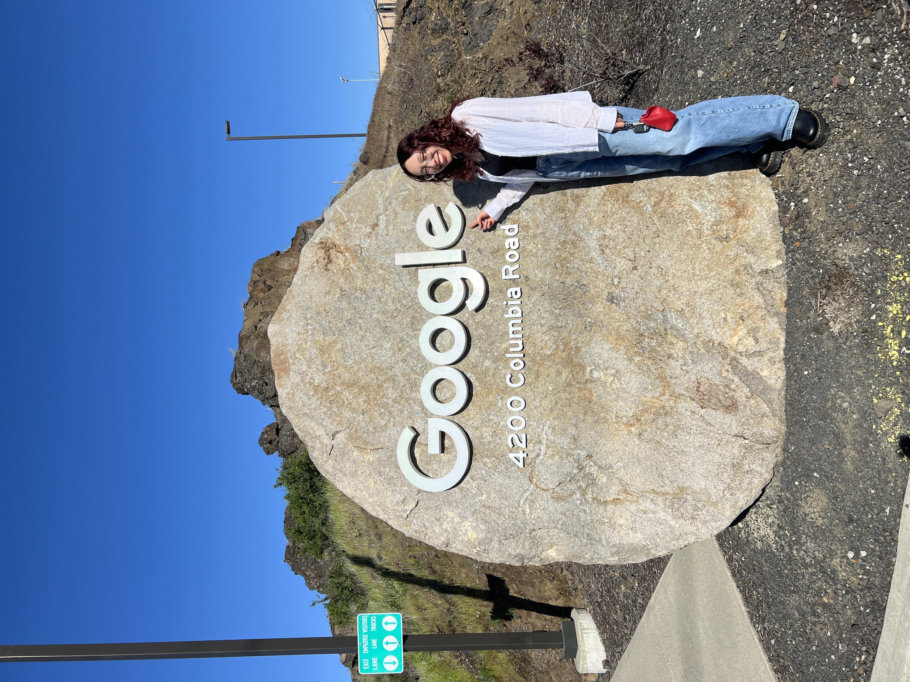
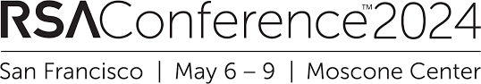
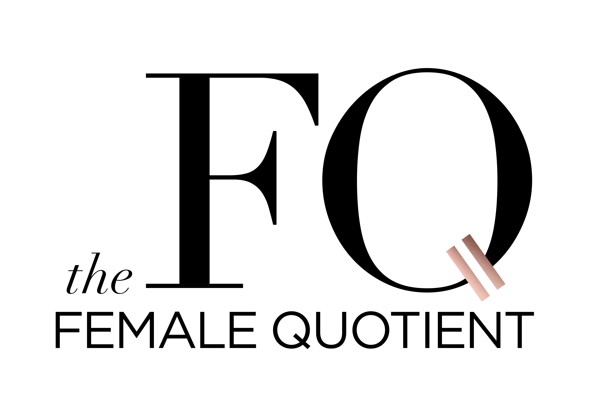
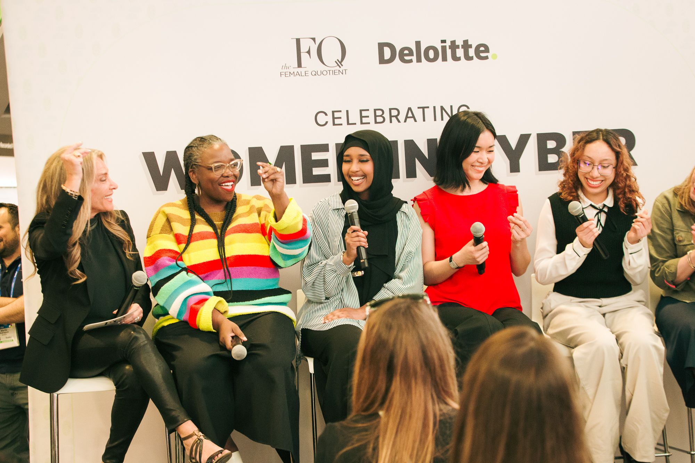
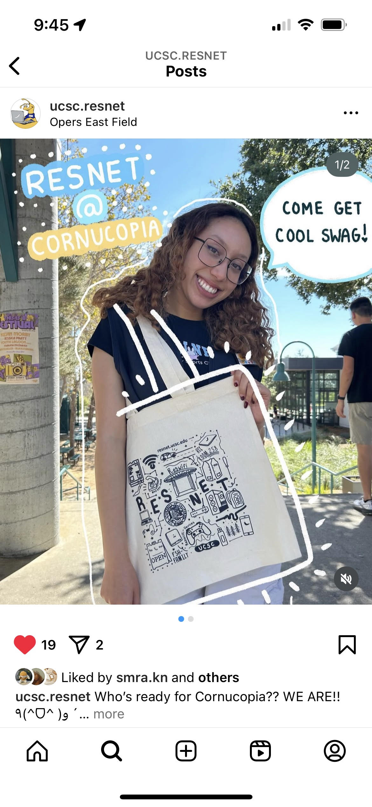
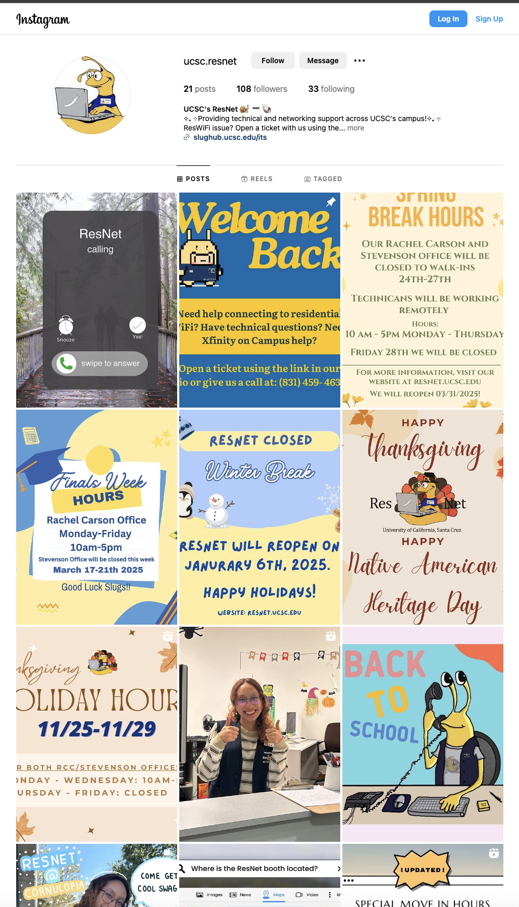

I have always loved arts & crafts ever since a young age. This creative side of me has guided me throughout my time as a coder and as a designer.
Whenever I was a part of a group project in college, I would always volunteer to lead the front-end development since I felt that was where my creative side could be unleashed while also bringing to life my group's design.
My main goal as a UX designer is to create technical designs that can be achieved through code that embodies both the user's needs and the main goals of the product while also including a personal artistic touch.
I am excited to embark on this new career journey and I can not wait to bring you all along with me!!
- 👩🏻🎓 College & Major
- University of California - Santa Cruz, B.S. Computer Science
- 💼 Current Job
- Level 2 Data Center Technician at Google
- 🧸 Hobbies
- Traveling, reading, video games, volleyball, baking, cooking, blind boxes & drawing
- 🖍️ UX Specialization
- Blending UX design with front-end code and hand-drawn visuals.
fun facts
Spoke at the 2024 RSA Conference on The Female Quotient x Kode with Klossy panel about women in cybersecurity and tech.



As an alumni of Kode with Klossy, I became a Data Science Instructor Assistant for their summer program, where I delivered lessons, provided technical support, and built an empowering learning environment.

During my time as a Residential Network Technician at UCSC Information Technology Services, I increased in-office visits by ∼30% through initiating merchandise & social media campaigns.

